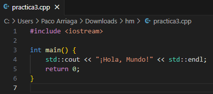

¿Cuáles son las características?
- Programación orientada a objetos: Permite crear clases y objetos, lo que facilita la reutilización del código.
- Gestión de memoria: Permite controlar directamente la memoria, lo que permite una mayor eficiencia.
- Compatibilidad con C: Permite reutilizar y adaptar código existente en C.
- Multiparadigma: Soporta diferentes estilos de programación.
- Sobrecarga del operador: Permite definiciones personalizadas para operadores.
- Manejo de excepciones: Gestiona errores y excepciones de forma sólida.
- Fluidez de procesamiento: Su ejecución y compilación es bastante rápida.
- Bases de expansión: Permite llevar los conocimientos adquiridos en C++ a otros lenguajes de programación.
Tipos de datos fundamentales
- int: Entero de 4 bytes, la opción predeterminada para valores enteros.
- double: Punto flotante de 8 bytes, la opción predeterminada para valores de punto flotante.
- bool: Booleano de 1 byte, representa valores que pueden ser true o false.
- char: Caracter de 1 byte, se utiliza en los caracteres ASCII.
- void: Vacío.
Ventajas y desventajas
Ventajas de C++:
- Alto rendimiento: Es un lenguaje compilado, lo que permite ejecutar código más rápido.
- Control sobre recursos del sistema: Ofrece control directo sobre la memoria y otros recursos del hardware.
- Multiplataforma: Se puede usar en diferentes sistemas operativos.
- Orientado a objetos: Facilita la creación de programas modulares y reutilizables.
- Gran comunidad y soporte: Tiene una extensa documentación y recursos en línea.
Desventajas de C++:
- Complejidad: Su sintaxis y gestión de memoria pueden ser difíciles para los principiantes.
- Seguridad: La falta de recolección automática de basura puede llevar a problemas de memoria.
- Curva de aprendizaje: Requiere tiempo para dominar sus conceptos avanzados como punteros y manejo de memoria.
- Menos abstracto: Aunque es potente, no ofrece tantas abstracciones como lenguajes más modernos.
Impresion de hola mundo

#include
int main() {
std::cout << "Hello world!" << std::endl;
return 0;
}